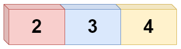
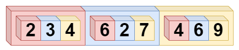

Wir haben bereits gelernt, dass ein Array eine Art Datencontainer ist, indem wir mehrere Daten speichern können. Vorstellen können wir uns das ganze wie eine Liste, in der unsere Daten hintereinander aufgelistet sind.
So ein Standard Array besteht aus einer Dimension. Oder bildlich gesprochen: Einer Liste. Arrays können aber auch mehr als eine Dimension haben. Das ist dann der Fall, wenn die Elemente in einem Array ebenfalls Arrays sind.
Zweidimensionale Arrays
Die einfachste Form von mehrdimensionalen Arrays sind die zweidimensionalen Arrays. Diese kann man sich auch noch gut bildlich vorstellen:
Wir haben bereits gelernt, dass Variablen Container von Daten sind und, dass Arrays Container von Variablen - also Containern - sind. Da Arrays selber Container sind, können Arrays auch andere Arrays beinhalten. Bildlich gesprochen kann man sich das so vorstellen: Eine Flasche ist eine Variable - sie kann unterschiedliche Flüssigkeiten (Daten) beinhalten. Eine Getränkekiste ist ein Container (Array) von Flaschen. Eine Europalette (z.B. in einem Lager) auf der Getränkekisten stehen ist dann ein Container (Array) für Getränkekisten. Wenn ich nun von der Europalette genau eine bestimmte Flasche nehmen möchte, dann kann ich z.B. zu Getränkekiste Nummer 2 und Flasche Nummer 6 gehen und habe mein Getränk.
Eine andere Möglichkeit sich zweidimensionale Arrays vorzustellen sind Koordinatensysteme:
Ein Koordinatensystem hat zwei Dimensionen: x und y. Zu einem Punkt im Koordinatensystem gehört immer ein x-Wert und ein y-Wert. Ich könnte mithilfe eines zweidimensionalen Arrays alle Punkte eines Koordinatensystems in einem "Datencontainer" speichern und so ganz einfach mit ihnen arbeiten. Ich könnte zum Beispiel an jedem Punkt im Koordinatensystem einen Punkt in einer anderen Farbe zeichnen und so eine Pixelgrafik erstellen. Du siehst also, dass zweidimensionale Arrays eng verbunden sind mit dem Zeichnen von 2D-Grafiken.
Aber nicht nur bei Processing, auch in unserem Alltagsleben findest du Koordinatensysteme.
- Denke an Schachbretter
- Oder Landkarten mit Längen- und Breitengraden
- Oder an GPS Systeme, welche diese Koordinaten speichern, verwerten und ausgeben.
- Aber auch in Tabellen mit Spalten und Zeilen ist die Grundidee ein Koordinatensystem.
All das sind zweidimensionale Arrays.
Einführung
Ein normaler Array hat x-beliebig viele Boxen. Und in diesen Boxen können Daten gespeichert werden. Schauen wir uns folgendes Array an:
int[] arrayEins = new int[] {2,3,4};Dieses Array hat nun drei Boxen:

Nun kannst du in jede dieser Boxen ein weiteres Array anlegen:

Nun ist unser Array zweidimensional. Jede Box beinhaltet wieder ein Array. Insgesamt haben wir also 9 Boxen. So ein Array kann man sich am besten als eine Tabelle mit Spalten und Zeilen vorstellen.
Ein normales Array besitzt nur eine Spalte. In unserem Beispiel hat das eindimensionale Array die Länge drei und die Werte 2, 3 und 4. Als Tabelle würde dies so aussehen:
| Spalte 0 | |
| Zeile 0 | 2 |
| Zeile 1 |
3 |
| Zeile 2 |
4 |
Du siehst: Die Tabelle oder das Array besitzt eine Spalte und drei Zeilen. Oder in anderen Worten: „Das Array besitzt drei Zeilen und jede Zeile besitzt nur eine Spalte." Und wenn du jetzt in den Fächern ein weiteres Array anlegst, dann hätte jede Zeile mehrere Spalten. Eine Tabelle mit drei Zeilen und drei Spalten wäre dann ein Array, welche 9 Integerwerte speichert.
| Spalte 0 | Spalte 1 | Spalte 2 | |
| Zeile 0 | 2 | 6 | 4 |
| Zeile 1 | 3 | 2 | 6 |
| Zeile 2 | 4 | 7 | 9 |
Deklaration
Ein normales Array hast du bisher entweder in einem oder in zwei Schirtten deklariert und initialisiert:
// Ein Schritt
int[] eindimArray = new int[] {2,3,4};
// Zwei Schritte
int[] eindimArray = new int [3];
eindimArray[0] = 2;
eindimArray[1] = 3;
eindimArray[2] = 4;Wenn du mehr Dimensionen brauchst, setze mehr eckige Klammern. Und zwar auf beiden Seiten des Zuweisungsoperators:
int[][] zweidimArray = new int[3][2];Jetzt hast du ein eindimensionales Array mit 3 Fächern deklariert und alle drei Fächer haben wiederum ein Array mit zwei Fächern. Das bedeutet, du hast jetzt 3 mal 2 Fächer. Also ein zweidimensionales Array, welches 6 Werte speichern könnte.
Initialisierung
Bleiben wir bei der Tabelle: Sie hat nun eine zweite Spalte, bzw. Array.
| Spalte 0 | Spalte 1 | |
| Zeile 0 | 2 | 7 |
| Zeile 1 | 3 | 12 |
| Zeile 2 | 4 | 8 |
Im Fach 0 0 befindet sich die Zahl 2. Das nächste Fach im Array könnte das Fach mit den Koordinaten 0 und 1 sein. Hier wird der Wert 7 gespeichert.
int[][] zweidimArray = new int[3][2]; // multidimensionales Array mit 3 Zeilen und 2 Spalten
zweidimArray[0][0]= 2; // Koordinaten 0 0
zweidimArray[0][1]= 7; // Koordinaten 0 1Dann geht es in die nächste Zeile, also in das nächste „erste Fach“. Dieses beinhaltet den Wert 3. Und das Fach 1-1 speichert den Wert 12.
zweidimArray[1][0]= 3; // Koordinaten 1 0
zweidimArray[1][1]= 12; // Koordinaten 1 1Die letzte Zeile speichert die Werte 4 und 8. Und so würde der Code mit allen Fächern dieses Arrays aussehen:
int[][] zweidimArray = new int[3][2]; // multidimensionales Array mit 3 Zeilen und 2 Spalten
zweidimArray[0][0]= 2; // Koordinaten 0 0
zweidimArray[0][1]= 7; // Koordinaten 0 1
zweidimArray[1][0]= 3; // Koordinaten 1 0
zweidimArray[1][1]= 12; // Koordinaten 1 1
zweidimArray[2][0]= 4; // Koordinaten 2 0
zweidimArray[2][1]= 8; // Koordinaten 2 1Natürlich können wir auch die Schreibweise mit den geschweiften Klammern verwenden, um das Array in einem Schritt zu deklarieren und initialisieren. Dafür brauchen wir innerhalb der ersten geschweiften Klammern weitere geschweifte Klammern:
int [] [] zweidimArray = new int [] []{{ 2, 7}, { 3, 12}, { 4, 8}};Um die Werte dann wieder aus dem Array zu lesen, kannst du println() verwenden. Dabei gehst du genauso vor, wie bei der Füllung der einzelnen Fächer. Du gibst die Koordinaten an und platzierst diese innerhalb des Befehls
//Werte aus dem Array lesen
println(zweidimArray[0][0]); //Rückgabe 2
println(zweidimArray[2][0]); //Rückgabe 4
println(zweidimArray[2][1]); //Rückgabe 8Dynamische Länge ab der 2. Dimension
Das besondere an der zweiten (dritten, vierten, usw.) Dimension eines Arrays ist, dass diese Dimensionen eine dynamische Länge haben können. Sprich jedes Array ab der zweiten Dimension kann eine andere Länge haben und du kannst diese auch noch nachträglich ändern. Und du kannst bei der Deklaration des Arrays die Länge erstmal "leer" lassen und später ändern:
int zweidimArray [] [] = new int [3] [];Du kannst dir das grafisch etwa so vorstellen:
| Spalte 0 | Spalte 1 | Spalte 2 | Spalte 3 | |
| Zeile 0 | 2 | 7 | ||
| Zeile 1 | 3 | 12 | 2 | |
| Zeile 2 | 4 | 8 | 22 | 3 |
Hier haben die Zeilen verschieden Längen. Die ausgegrauten Felder existieren quasi nicht.
Weitere Dimensionen
Wenn wir bei dem Beispiel mit den Flaschen, der Getränkekiste und der Europalette bleiben (was ja bereits ein zweidimensionales Array war), dann kann man das Beispiel auch sehr leicht um weitere Dimensionen erweitern: Die Europalette steht in einem Lager (ein Container/Array für Europaletten), das Lager steht in einer Stadt (ein Container von Gebäuden), die Stadt steht ein einem Land (ein Container von Städten) usw. Mit so einer Art Verschachtelung kann man sich mehrdimensionale Arrays gut vorstellen. Sie helfen dabei Daten zu strukturieren. Durch diese Aufteilung ist es leichter eine bestimmte Flasche zu finden, als wenn alle Flaschen in ganz Deutsland in einer langen Liste stehen würden.
Anwendungsbeispiel mit 3 Dimensionen
Stell dir vor, wir wollen ein 10x10 großes Gitter mit bunten Rechtecken zeichnen und die RGB-Farbwerte wollen wir alle in einem Array speichern. Also brauchen wir ein Array mit folgenden Dimensionen:
int[][][] colorValues = new int[10][10][3]; // je 10 Felder in x und in y Richtung, 3 Felder für die RGB Werte.Jetzt möchten wir den Array mit Farbwerten befüllen. Wie können wir das auf eine schnelle Weise tun? (Von Hand, also Zeile für Zeile wären das 10x10x3 = 300 Zeilen Code). Richtig, wir verwenden For-Schleifen.
Die erste For-Schleife ist leicht. Hier erhöhen wir i einfach so lange i kleiner als die Länge des ersten Arrays ist. Auf die Länge des Arrays können wir mithilfe des Stichworts length zugreifen: colorValues.length.
for (int i = 0; i < colorValues.length; i++) {
}Ein häufiger Anfängerfehler ist es hier in der Schleife <= anstelle von < anzugeben. Das ergibt aber einen Fehler. Die Länge des Arrays ist in diesem Fall 10. Da Arrays aber bei 0 anfangen zu zählen, wollen wir mit der For-Schleife nur die Werte 0-9 durchlaufen. Das schaffen wir, indem wir < verwenden.
Kommen wir zur nächsten Schleife, die für die zweite Dimension. Diese funktioniert gleich, nur dass wir dieses Mal auf die Länge des Arrays mit dem Index i zugreifen müssen:
for (int i = 0; i <colorValues.length; i++) {
for (int j = 0; j < colorValues[i].length; j++) {
}
}Genau so ist das bei der dritten Schleife:
for (int i = 0; i <colorValues.length; i++) {
for (int j = 0; j < colorValues[i].length; j++) {
for (int k = 0; k < colorValues[i][j].length; k++) {
}
}
}Nun können wir die Felder befüllen. Die drei Felder von k stehen für die 3 Farbwerte RGB. Hier können wir nun etwas kreativ werden und rumspielen. Schau dir mal folgende Version an und probiere sie in Processing aus:
int [] [] [] colorValues = new int [10] [10] [3];
size(200,200);
// Farbwerte befüllen
for (int i = 0; i <colorValues.length; i++) {
for (int j = 0; j < colorValues[i].length; j++) {
for (int k = 0; k < colorValues[i][j].length; k++) {
if(k == 0) colorValues[i][j][k] = 25*i; // Rot-Wert
if(k == 1) colorValues[i][j][k] = 25*j; // Grün-Wert
if(k == 2) colorValues[i][j][k] = 0; // Blau-Wert
}
}
}
// Rechtecke zeichnen
for (int i = 0; i <colorValues.length; i++) {
for (int j = 0; j < colorValues[i].length; j++) {
fill(colorValues[i][j][0], colorValues[i][j][1], colorValues[i][j][2]); // Farbwerte in fill() eintragen
rect(i*20, j*20, 20, 20);
}
}Der Rot-Wert und der Grün-Wert ergeben sich aus i und j mit 25 multipliziert. Das ergibt dann, wenn i und j 10 sind 250.
Unten werden die Rechtecke gezeichnet. Hierfür benötigen wir nur 2 For-Schleifen für die x- und y-Dimension. Die Farbwerte werden direkt in fill() eingetragen.
Spiele ein wenig mit dem Farbwerten oben herum:
- Momentan werden nur die Farben rot und grün verwendet. Wie kannst du blau mit einbauen? Was passiert dann?
- Momentan ist die obere linke Ecke dunkel, weil die Werte bei 0 anfangen. Wie kannst du das invertieren?
- Was passiert, wenn du einem der Farbwerte eine Zufallszahl zuweist?
Zusammenfassung
- Arrays können nicht nur eindimensional sein. Du kannst in Java auch mehr- oder multidimensionale Arrays anlegen.
- Zweidimensionale Arrays kann man sich wie eine Tabelle oder ein Koordinatensystem vorstellen.
- Wie auch schon bei den normalen Arrays ist hier keine Mischung der Datentypen möglich.
- Mehrdimensionale Arrays können mit verschachtelten For-Schleifen abgerufen und befüllt werden.
- Auf die Länge eines Arrays kann mithilfe des Befehls length zugegriffen werden (arrayName.length oder arrayName[i].length).
- Ab der zweiten Dimension haben die Arrays ein dynamische Länge.